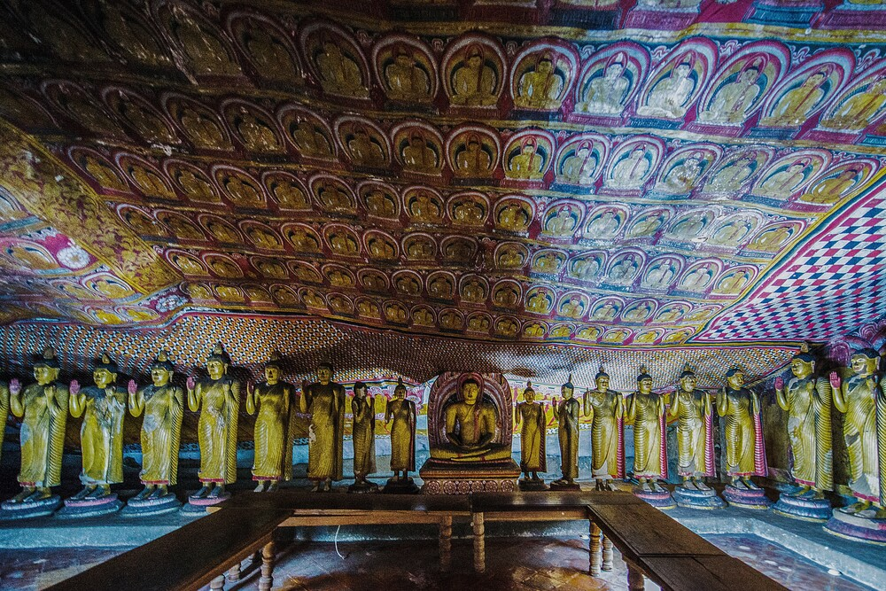

HERITAGE SITE
THE MOST BEAUTIFUL UNESCO
WORLD HERITAGE
Dambulla Cave Temple
Located in central Sri Lanka, the Rangiri Dambulla Cave Temple is a living Buddhist site that is focused on a series of five cave shrines. Inhabited by forest-dwelling Buddhist monks since the 3rd century BCE, these natural caves have been transformed continuously throughout the historical period into one of the largest and most outstanding Buddhist complexes in the Southern and South Eastern Asian region,showcasing innovative approaches to interior layout and decoration
A sacred pilgrimage site for 22 centuries, this cave monastery, with its five sanctuaries, is the largest, best-preserved cave-temple complex in Sri Lanka. The Buddhist mural paintings (covering an area of 2,100 m2 ) are of particular importance, as are the 157 statues.

Best time to visit Dambulla cave temple The best time to visit the Cave Temple depends on the weather – what a surprise! But generally, I suggest going just before sunset. It's less busy, as most foreigners come in the morning (after 8 am) or during the day. And even better: It's the best spot for sunset viewing in Dambulla
When I first heard about cave temples in Sri Lanka I was like – gotta go. We love caves and dig Buddhism. (sometimes, we dig caves too but that’s another story). When I realized that “caves” in volcanic Sri Lanka are just rock overhangs, I got a little disappointed. Even still, the Dambulla Cave Temples made a great second half of our Sigiriya Rock day.
Caves, be it limestone or rock overhangs, are the most stable spaces on Earth. They preserve a history that counts time in centuries, not decades. The Dambulla Temples are well preserved and still functioning today after nearly two thousand years of continual use. The continuity of use makes it the best preserved antiquity you’ll ever visit.
There is a dress code for entering temples in Sri Lanka that is similar to many temples in Southeast Asia. You can’t wear shorts and woman need to cover their shoulders. If you didn’t bring the appropriate clothes, you may be able to borrow a wrap at the entrance, but it’s best not to take chances. Take a look at Ed’s lovely purple wrap that he used to cover up his shorts.